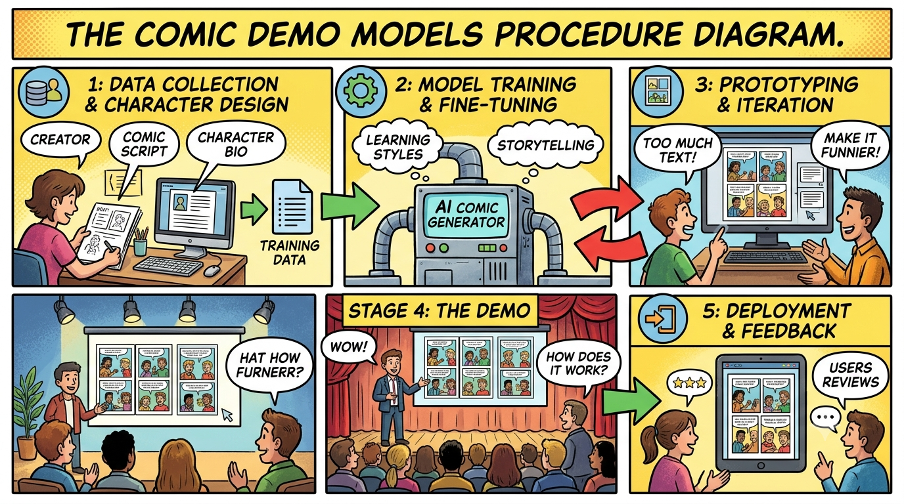

**Comic craft** is the art and technique of creating comic books and visual stories. It combines sequential illustration, character design, scriptwriting, panel layout, and lettering to tell a narrative through pictures and text working together.
The 5 Pillars of Comic Craft Scripting & Pacing Page Count & Panel Beats: Structuring story arcs into page counts (e.g., standard 22-page single issues) and controlling pacing via panel counts per page. Page Turns & Cliffhangers: Placing major visual reveals or plot twists on odd-numbered pages so they hit when the reader turns the page. Panel Layout & Composition Grid Structures: Choosing layout patterns (e.g., 6-panel grid, 9-panel grid, or dynamic splash pages) to control tempo. Focal Points & Eyelines: Guiding the reader’s eye across the page in a natural "Z-pattern" using character action and line composition. Visual Storytelling & Acting Character Acting & Expressions: Conveying dialogue, emotion, and body language through visual poses and facial expressions rather than relying solely on text. Gutter & Closure: Utilizing the space between panels ("the gutter") to let the reader's mind fill in missing action and time transitions. Lettering & Typography Balloon Placement: Positioning speech bubbles and narrative captions to reinforce reading order without blocking essential art. Font Styles & Sound Effects (SFX): Using custom lettering styles and dynamic SFX to convey tone, volume, and ambient audio cues visually. Color & Lighting Palette & Mood: Selecting color palettes to establish tone, time of day, and emotional shifts between scenes. Visual Hierarchy: Using contrast and lighting to highlight primary characters and keep background elements from cluttering the scene. Standard Script Page Structure A professional comic script formats these elements step-by-step for the illustrator:
A sterile room bathed in harsh fluorescence. Cold metal instruments glint under the overhead light. **PANEL 1** *Medium Shot.* A patient lies back in an oversized recliner, eyes wide, staring up at a massive, articulated mechanical arm hovering overhead. The arm bristles with optical lenses, fine-tip sensors, and a single, glowing blue needle. A surgeon stands beside the chair, dressed in crisp scrubs, adjusting a digital touchscreen interface attached to the arm's base. **SURGEON** "Breathe slowly. The neuro-mapping phase takes about thirty seconds." **PATIENT** "Will I... feel it?" --- **PANEL 2** *Close-Up.* The blue needle hovers just millimeters above the patient's temple. A faint laser grid Projects down across their face, mapping the skin with fine red coordinates. A solitary drop of sweat runs down the patient’s cheek. **SURGEON (O.S.)** "Only a slight pulse. Like a static shock when you touch a doorknob." --- **PANEL 3** *Extreme Close-Up.* The needle fires a sudden, brilliant beam of cobalt light into the skin—not piercing it, but passing through like a phantom. Inside the glowing light, tiny translucent micro-nodes disperse beneath the tissue. **SFX:** *HUMMMMMMMM-THWIP!* --- **PANEL 4** *Wide Shot.* The room darkens automatically as holographic schematics pulse into existence around the patient's head. Golden tendrils of light trace the neural pathways of their brain, illuminated on the monitors behind the surgeon. The patient's hands relax on the armrests, eyes gently closed. **SURGEON** "Mapping complete. Synapses synced." **PATIENT** "It... feels warm." --- **PANEL 5** *Full Shot.* The mechanical arm retracts upward into the ceiling bay. The surgeon steps forward, handing the patient a small glass of water and offering a supportive hand to help them sit up. The monitors transition from red diagnostic lines to a steady, calm green baseline. **SURGEON** "Procedure success. Welcome back."
